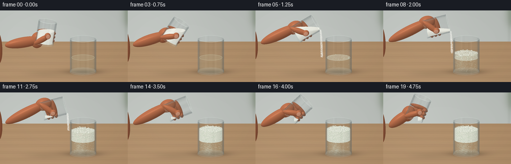
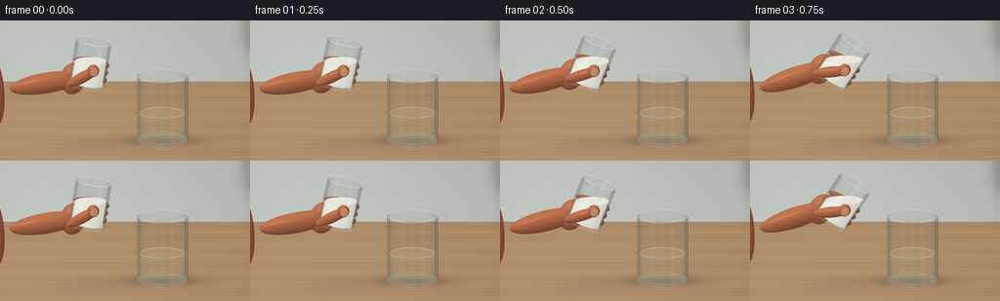
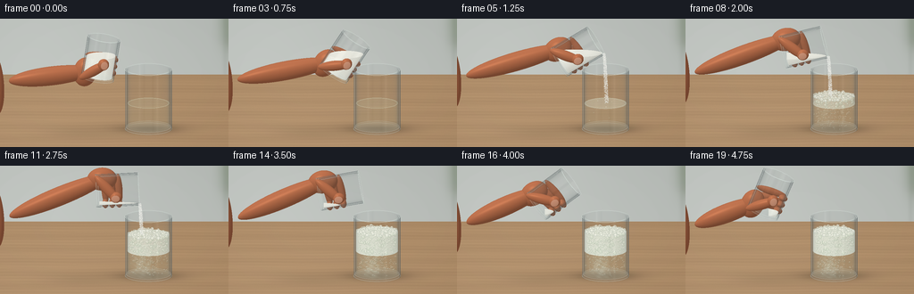
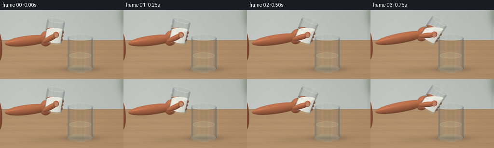

CODING AGENTS AS PIXEL WORLD MODELS
traex/GPT-6.1-Sol · material_0024
点击播放 · 原生 RGB 像素
逐轮保存的候选
回放视频、检查图与代码变化。
每份候选均可单独播放。实际图片检查记录在下方工具轨迹中。
候选 01播放与检查图
点击播放 · 原生 RGB 像素


展开代码变化
--- 上一保存版本
+++ 本次保存版本
@@ -0,0 +1,435 @@
+"""Procedural RGB rendering of a glass-and-vinegar kitchen experiment.
+No external assets or rendering libraries; analytic geometry with NumPy and PIL.
+"""
+from pathlib import Path
+import json
+import math
+import numpy as np
+from PIL import Image, ImageDraw, ImageFilter
+from artifact_io import save
+
+ROOT = Path(__file__).resolve().parent
+SPEC = json.loads((ROOT / 'task_spec.json').read_text())
+W, H = SPEC['width'], SPEC['height']
+SS = 3
+WW, HH = W * SS, H * SS
+SCALE = W / 5.6
+ELEV = math.radians(15)
+D = np.array([0., -math.sin(ELEV), -math.cos(ELEV)])
+UP = np.array([0., math.cos(ELEV), -math.sin(ELEV)])
+RIGHT = np.array([1., 0., 0.])
+CENTER = np.array([0., 1.18, 0.])
+yy, xx = np.mgrid[0:HH, 0:WW].astype(np.float32)
+sx = (xx / SS + .5 / SS - W / 2) / SCALE
+sy = (H / 2 - yy / SS - .5 / SS) / SCALE
+ORIGIN = (CENTER + sx[..., None] * RIGHT + sy[..., None] * UP - D * 8).astype(np.float32)
+RNG = np.random.default_rng(317)
+
+def smooth(a):
+ a = np.clip(a, 0., 1.)
+ return a * a * (3 - 2 * a)
+
+def project(p):
+ p = np.asarray(p) - CENTER
+ return ((W / 2 + p[..., 0] * SCALE) * SS,
+ (H / 2 - (p @ UP) * SCALE) * SS)
+
+def over(img, color, alpha):
+ a = np.asarray(alpha)
+ if a.ndim == 2:
+ a = a[..., None]
+ return img * (1 - a) + np.asarray(color) * a
+
+# Photographic, slightly defocused warm kitchen background.
+ttable = -ORIGIN[..., 1] / D[1]
+Ptable = ORIGIN + ttable[..., None] * D
+twall = (-5.2 - ORIGIN[..., 2]) / D[2]
+Pwall = ORIGIN + twall[..., None] * D
+istable = ttable < twall
+X, Z = Ptable[..., 0], Ptable[..., 2]
+wood = (.010 * np.sin(Z * 86 + 3 * np.sin(X * .65)) +
+ .006 * np.sin(Z * 247 + 1.6 * np.sin(X * 1.1)) +
+ .006 * np.sin(Z * 20 + .8 * np.sin(X * 2.2)))
+wood += .003 * RNG.normal(size=(HH, WW))
+wood += .009 * np.sin(Z * 5.4)
+light = .04 * np.exp(-((X + 1.7) / 3.8) ** 2 - ((Z - .1) / 6) ** 2)
+table = np.stack([.665 + wood + light, .535 + wood * .88 + light,
+ .395 + wood * .7 + light], -1)
+wx, wy = Pwall[..., 0], Pwall[..., 1]
+walllight = .045 * np.exp(-((wx + 2) / 3) ** 2) - .025 * np.clip(wy / 4, 0, 1)
+wall = np.stack([.72 + walllight, .738 + walllight, .72 + walllight], -1)
+# A soft seam in the backsplash, and an indistinct dark green plant at right.
+wall -= (.027 * np.exp(-((wx - 2.72) / .06) ** 2))[..., None]
+plant = np.zeros((HH, WW), np.float32)
+for cx, cy, ax, ay in [(3.0, 1.18, .29, .78), (3.22, 1.45, .27, .8),
+ (2.78, 1.38, .24, .6), (3.12, .86, .35, .22)]:
+ plant += np.exp(-((wx - cx) / ax) ** 2 - ((wy - cy) / ay) ** 2)
+wall = over(wall, [.39, .46, .35], np.clip(plant * .27, 0, .45))
+background = np.where(istable[..., None], table, wall)
+# Very soft contact shadows on the oak surface.
+for x0,z0,rx,rz,strength in [(.84,.0,.69,.40,.24),(.84,-.12,.9,.6,.09),(-.8,.25,.9,.58,.07)]:
+ shadow = np.exp(-((X-x0)/rx)**2 - ((Z-z0)/rz)**2) * strength * istable
+ background *= (1-shadow[...,None])
+background = np.clip(background,0,1).astype(np.float32)
+
+# Uniform samples inside the source glass, for a gravity-level powder surface.
+q = RNG.random((24000, 3))
+r = np.sqrt(q[:, 0]) * .37
+phi = q[:, 1] * 2 * np.pi
+POWDER_SAMPLES = np.stack([r*np.cos(phi), .08+q[:,2]*.91, r*np.sin(phi)], -1)
+
+class Cup:
+ def __init__(self, bottom, axis, radius, height):
+ self.bottom = np.asarray(bottom, dtype=np.float32)
+ self.axis = np.asarray(axis, dtype=np.float32)
+ self.radius = radius
+ self.height = height
+ self.radial = np.array([self.axis[1], -self.axis[0], 0.])
+ self.O = ORIGIN-self.bottom
+ self.oy = self.O @ self.axis
+ self.dy = float(D @ self.axis)
+ self.orr = self.O-self.oy[...,None]*self.axis
+ self.dr = D-self.dy*self.axis
+ def side(self, rad):
+ a = float(self.dr @ self.dr)
+ b = 2*(self.orr @ self.dr)
+ c = np.sum(self.orr*self.orr, axis=-1)-rad*rad
+ disc = b*b-4*a*c
+ sq = np.sqrt(np.maximum(disc,0))
+ ts = [(-b-sq)/(2*a), (-b+sq)/(2*a)]
+ outs=[]
+ for t in ts:
+ y = self.oy+t*self.dy
+ valid=(disc>=0)&(y>=0)&(y<=self.height)&(t>0)
+ n = (self.orr+t[...,None]*self.dr)/rad
+ outs.append((t,n,valid))
+ return outs
+ def volume(self, rad, low, high, worldlevel=None):
+ a=float(self.dr@self.dr)
+ b=2*(self.orr@self.dr)
+ c=np.sum(self.orr*self.orr,axis=-1)-rad*rad
+ disc=b*b-4*a*c
+ sq=np.sqrt(np.maximum(disc,0))
+ side0=(-b-sq)/(2*a); side1=(-b+sq)/(2*a)
+ if abs(self.dy)>1e-8:
+ t0=(low-self.oy)/self.dy; t1=(high-self.oy)/self.dy
+ cap0=np.minimum(t0,t1); cap1=np.maximum(t0,t1)
+ else:
+ cap0=np.full((HH,WW),-1e5);cap1=-cap0
+ enter=np.maximum(side0,cap0)
+ leave=np.minimum(side1,cap1)
+ norm=(self.orr+enter[...,None]*self.dr)/rad
+ capmask=cap0>side0
+ norm[capmask]=self.axis*(-1 if self.dy>0 else 1)
+ if worldlevel is not None:
+ tp=(worldlevel-ORIGIN[...,1])/D[1]
+ pmask=tp>enter
+ enter=np.maximum(enter,tp)
+ norm[pmask]=[0,1,0]
+ valid=(disc>=0)&(leave>enter)&(enter>0)
+ p=ORIGIN+enter[...,None]*D
+ return enter,norm,valid,p
+
+LIGHT = np.array([-.42,.70,.57]); LIGHT/=np.linalg.norm(LIGHT)
+
+def environment(ref):
+ base = np.zeros_like(ref) + np.array([.33,.37,.38])
+ sky=np.clip(ref[...,1]*.5+.2,0,1)
+ base += sky[...,None]*np.array([.37,.36,.32])
+ softbox=np.exp(-((ref[...,0]+.59)/.24)**6-((ref[...,1]-.43)/.52)**8)
+ softbox*=smooth((ref[...,2]+.25)/.6)
+ base+=softbox[...,None]*np.array([.68,.68,.65])
+ strip=np.exp(-((ref[...,0]-.69)/.065)**2)*smooth((ref[...,2]+.1)/.5)
+ base+=strip[...,None]*.46
+ dark=np.exp(-((ref[...,0]-.37)/.10)**2)*.28
+ base-=dark[...,None]
+ return np.clip(base,0,1)
+
+def glass_face(img, face, strength=1., distort=False):
+ t,n,valid=face
+ nd=n@D
+ facing=np.clip(abs(nd),0,1)
+ F=(.026+.90*(1-facing)**5)*strength
+ reflection=D-2*nd[...,None]*n
+ col=environment(reflection)
+ # Minute blue-green absorption in thick crystal edges.
+ a=np.where(valid, np.clip(F+.018*(1-facing),0,.82),0)
+ if distort:
+ offset=(n[...,0]*2.2*(1-facing)*SS).astype(np.int32)
+ ix=np.clip(np.arange(WW)[None,:]+offset,0,WW-1)
+ refracted=img[np.arange(HH)[:,None],ix]
+ img=over(img,refracted,np.where(valid,.30*(1-facing),0))
+ img=over(img,col,a)
+ return img
+
+def glass_back(img,cup):
+ img=glass_face(img,cup.side(cup.radius)[1],.82)
+ inner=cup.side(cup.radius-.038)[1]
+ inner=(inner[0],-inner[1],inner[2] & ((cup.oy+inner[0]*cup.dy)>.075))
+ return glass_face(img,inner,.70)
+
+def glass_front(img,cup):
+ inner=cup.side(cup.radius-.038)[0]
+ inner=(inner[0],-inner[1],inner[2] & ((cup.oy+inner[0]*cup.dy)>.075))
+ img=glass_face(img,inner,.70)
+ img=glass_face(img,cup.side(cup.radius)[0],1,True)
+ # The bottom is thick, so it is more reflective than the walls.
+ for y in [.015,.065]:
+ t=(y-cup.oy)/cup.dy
+ pos=cup.orr+t[...,None]*cup.dr
+ valid=(np.sum(pos*pos,axis=-1)<cup.radius**2)&(t>0)
+ img=over(img,[.78,.83,.81],valid*.095)
+ return img
+
+def rim_lines(img,cup):
+ pil=Image.fromarray((np.clip(img,0,1)*255).astype(np.uint8),'RGB').convert('RGBA')
+ layer=Image.new('RGBA',(WW,HH)); dr=ImageDraw.Draw(layer)
+ for h, rad, al in [(0.018,cup.radius,100),(.065,cup.radius-.027,88),
+ (cup.height,cup.radius,170),(cup.height,cup.radius-.038,122)]:
+ for rear in [True,False]:
+ ang=np.linspace(np.pi if rear else 0,2*np.pi if rear else np.pi,101)
+ points=cup.bottom+h*cup.axis+rad*np.cos(ang)[:,None]*cup.radial
+ points[:,2]+=rad*np.sin(ang)
+ px,py=project(points)
+ # Rear and front arcs have differing intensity, like polished glass.
+ dr.line(list(zip(px,py)), fill=(224,237,230,int(al*(.6 if rear else 1))),width=max(1,int(.55*SS)))
+ # Small polished rectangular highlights on each of the vertical walls.
+ for sign in [-1,1]:
+ h=np.linspace(.13,cup.height-.10,50)
+ p=cup.bottom+h[:,None]*cup.axis+sign*(cup.radius-.019)*cup.radial
+ p[:,2]+=.10
+ px,py=project(p)
+ dr.line(list(zip(px,py)), fill=(242,248,240,100 if sign<0 else 65),width=max(1,int(.65*SS)))
+ pil=Image.alpha_composite(pil,layer).convert('RGB')
+ return np.asarray(pil).astype(np.float32)/255
+
+def ellipsoid(center,radii,basis):
+ o=(ORIGIN-np.asarray(center))@basis
+ d=D@basis
+ inv=1/np.asarray(radii)**2
+ a=np.sum(d*d*inv)
+ b=2*np.sum(o*d*inv,axis=-1)
+ c=np.sum(o*o*inv,axis=-1)-1
+ disc=b*b-4*a*c
+ t=(-b-np.sqrt(np.maximum(disc,0)))/(2*a)
+ n=(o+t[...,None]*d)*inv
+ n=n@basis.T
+ n/=np.maximum(np.linalg.norm(n,axis=-1,keepdims=True),1e-8)
+ valid=(disc>=0)&(t>0)
+ return t,n,valid
+
+def along_basis(a,b):
+ v=np.asarray(b)-a;v/=np.linalg.norm(v)
+ r=np.cross(v,[0,0,1]);r/=np.linalg.norm(r)
+ f=np.cross(r,v)
+ return np.stack([r,v,f],axis=1)
+
+def hand(img,cup,front=False):
+ B=cup.bottom;A=cup.axis;R=cup.radial;Z=np.array([0.,0.,1.])
+ shapes=[]
+ def ell(c,rad,basis=None):
+ shapes.append((np.asarray(c),rad,np.eye(3) if basis is None else basis))
+ def finger(a,b,r):
+ a=np.asarray(a);b=np.asarray(b)
+ ell((a+b)/2,(r,np.linalg.norm(b-a)/2+r,r*.92),along_basis(a,b))
+ basis=np.stack([R,A,Z],axis=1)
+ if not front:
+ # Forearm, wrist and fleshy palm, all connected behind the glass.
+ palm=B-R*.33+A*.17+Z*.14
+ wrist=np.array([-2.35,1.32+(B[1]-1.30)*.4,.21])
+ finger(wrist,palm,.235)
+ ell(wrist+np.array([-.6,-.07,0]),(.83,.245,.235),along_basis(wrist+[-.9,-.08,0],wrist))
+ ell(palm,(.285,.365,.225),basis)
+ # Bent fingertips visible through the lower half of the tumbler.
+ for h in [.22,.39,.56]:
+ a=B-R*.30+A*h-Z*.09
+ b=B+R*.31+A*(h+.015)-Z*.16
+ finger(a,b,.09)
+ ell(B+R*.32+A*h+Z*.045,(.11,.08,.13),basis)
+ else:
+ a=B-R*.35+A*.09+Z*.28
+ b=B+R*.10+A*.48+Z*.39
+ finger(a,b,.125)
+ ell(b-R*.025+A*.014+Z*.045,(.135,.145,.093),basis)
+ depth=np.full((HH,WW),np.inf,np.float32)
+ normals=np.zeros((HH,WW,3),np.float32)
+ for c,rad,b in shapes:
+ t,n,v=ellipsoid(c,rad,b)
+ sel=v&(t<depth)
+ depth[sel]=t[sel];normals[sel]=n[sel]
+ valid=np.isfinite(depth)
+ shade=np.clip(normals@LIGHT,0,1)
+ sky=np.clip(normals[...,1],0,1)
+ col=np.array([.67,.398,.27])*(.69+.39*shade[...,None])
+ col+=np.array([.058,.041,.033])*sky[...,None]
+ reflection=2*(normals@(-D))[...,None]*normals+D
+ spec=np.clip(reflection@LIGHT,0,1)**23*.10
+ col+=spec[...,None]*np.array([.9,.66,.47])
+ points=ORIGIN+np.where(valid,depth,0)[...,None]*D
+ pores=(np.sin(points[...,0]*620+points[...,1]*311)*np.sin(points[...,2]*715+points[...,1]*440))*.005
+ col+=pores[...,None]
+ img=over(img,col,valid)
+ if front:
+ # Translucent oval thumbnail, following the same tilted grip.
+ c=B+R*.10+A*.48+Z*.480
+ t,n,v=ellipsoid(c,(.087,.102,.018),basis)
+ nail=np.array([.76,.548,.444])*(.84+.19*np.clip(n@LIGHT,0,1)[...,None])
+ nail+=.028*np.clip(n@(-D),0,1)[...,None]**8
+ img=over(img,nail,v*.9)
+ return img
+
+# Deterministic bubble populations: fine effervescence, then dense white foam.
+BUBBLES=RNG.random((350,7))
+SURFACE=RNG.random((310,5))
+GRAINS=RNG.random((1600,7))
+
+def receiver_contents(img,cup,t):
+ fluid=.665
+ _,n,mask,p=cup.volume(cup.radius-.047,.075,fluid)
+ # Vinegar is clear, with only a faint straw tint and curved surface reflection.
+ col=np.array([.71,.70,.54])+np.clip(n@LIGHT,0,1)[...,None]*.045
+ img=over(img,col,mask*.13)
+ # Fine glass/liquid meniscus around the top.
+ pil=Image.fromarray((np.clip(img,0,1)*255).astype(np.uint8)).convert('RGBA')
+ lay=Image.new('RGBA',(WW,HH));draw=ImageDraw.Draw(lay)
+ ang=np.linspace(0,2*np.pi,151)
+ ps=cup.bottom+fluid*cup.axis+(.50*np.cos(ang))[:,None]*cup.radial
+ ps[:,2]+=.50*np.sin(ang)
+ px,py=project(ps)
+ draw.polygon(list(zip(px,py)),fill=(218,219,190,25))
+ draw.line(list(zip(px,py)),fill=(228,235,207,94),width=2)
+ pil=Image.alpha_composite(pil,lay)
+ img=np.asarray(pil.convert('RGB')).astype(np.float32)/255
+ reaction=smooth((t-.95)/2.35)
+ if reaction<=0:
+ return img
+ top=fluid+.48*reaction
+ # Milky plumes drifting down from where the soda meets the vinegar.
+ _,_,lm,lp=cup.volume(cup.radius-.053,.085,fluid)
+ cloud=np.exp(-((lp[...,0]-(.54+.17*reaction))/.22)**2)
+ cloud*=np.exp(-((lp[...,1]-(.60-.20*reaction))/.31)**2)
+ turbulence=.7+.3*np.sin(lp[...,0]*29+lp[...,1]*22+t*2)*np.sin(lp[...,1]*38-t*3)
+ img=over(img,[.84,.86,.78],lm*cloud*turbulence*(.50*reaction))
+ # The body of the foam remains inside the glass and steadily rises.
+ _,fn,fm,fp=cup.volume(cup.radius-.055,fluid-.015,top-.014)
+ shade=np.clip(fn@LIGHT,0,1)
+ noise=.014*np.sin(fp[...,0]*175+fp[...,1]*163)*np.sin(fp[...,2]*181)
+ fo= np.array([.83,.847,.79])+shade[...,None]*.10+noise[...,None]
+ img=over(img,fo,fm*(.25+.69*reaction))
+ pil=Image.fromarray((np.clip(img,0,1)*255).astype(np.uint8)).convert('RGBA')
+ lay=Image.new('RGBA',(WW,HH)); dr=ImageDraw.Draw(lay)
+ # Effervescent carbon dioxide bubbles, with a dark lower ring and a tiny glint.
+ for j,row in enumerate(BUBBLES):
+ rad0=np.sqrt(row[0])*.485
+ angle=row[1]*2*np.pi
+ x=cup.bottom[0]+rad0*np.cos(angle)
+ z=rad0*np.sin(angle)
+ y=.09+((row[2]+max(t-.96,0)*(.39+.35*row[3]))%1)*(top-.08)
+ radius=.007+.019*row[4]**2
+ if y>fluid:
+ radius*=1.2
+ if row[6]>reaction*1.8:
+ continue
+ px,py=project([x,y,z]); rr=radius*SCALE*SS
+ a=int((55+60*row[5])*(.55+.45*reaction))
+ dr.ellipse((px-rr,py-rr,px+rr,py+rr),fill=(233,241,217,int(a*.13)),outline=(124,146,128,int(a*.8)),width=max(1,int(.27*SS)))
+ dr.arc((px-rr,py-rr,px+rr,py+rr),190,300,fill=(255,255,242,a+45),width=max(1,int(.4*SS)))
+ # Packed bubbles on the foam's top surface, projected in true 3-D.
+ count=int(310*min(1,reaction*2.3))
+ surf=[]
+ for row in SURFACE[:count]:
+ radius=(.014+.034*row[3]**1.8)*(min(1,reaction*4))
+ rad=np.sqrt(row[0])*.49
+ a=row[1]*2*np.pi
+ x=cup.bottom[0]+rad*np.cos(a);z=rad*np.sin(a)
+ y=top+.012*np.sin(11*x+2*t)+.008*np.sin(z*30+t*3)+radius*.2
+ surf.append((z,x,y,radius,row[4]))
+ surf.sort(key=lambda v:v[0])
+ for z,x,y,radius,k in surf:
+ px,py=project([x,y,z]);r=radius*SCALE*SS
+ shade=int(210+18*k)
+ dr.ellipse((px-r,py-r*.88,px+r,py+r*.88),fill=(shade,shade+3,shade-9,240),outline=(185,196,176,115),width=1)
+ dr.ellipse((px-r*.56,py-r*.67,px+r*.42,py+r*.18),fill=(251,251,238,180))
+ # A few larger translucent cells are embedded on the foam's visible front.
+ for j,row in enumerate(BUBBLES[:110]):
+ if row[6]>.90*reaction:
+ continue
+ x=cup.bottom[0]+(row[0]*2-1)*.46
+ z=np.sqrt(max(.001,.49**2-(x-cup.bottom[0])**2))*.90
+ y=fluid+(top-fluid)*row[1]
+ radius=.009+.032*row[4]**2
+ px,py=project([x,y,z]);rr=radius*SCALE*SS
+ dr.ellipse((px-rr,py-rr,px+rr,py+rr),fill=(218,228,205,80),outline=(154,174,150,115),width=1)
+ dr.arc((px-rr*.85,py-rr*.85,px+rr*.85,py+rr*.85),190,280,fill=(255,255,241,180),width=2)
+ return np.asarray(Image.alpha_composite(pil,lay).convert('RGB')).astype(np.float32)/255
+
+def powder(img,cup,fraction):
+ points=(cup.bottom+POWDER_SAMPLES[:,0,None]*cup.radial+
+ POWDER_SAMPLES[:,1,None]*cup.axis+POWDER_SAMPLES[:,2,None]*[0,0,1])
+ level=np.quantile(points[:,1],fraction)
+ _,n,mask,p=cup.volume(cup.radius-.046,.077,cup.height-.012,level)
+ diffuse=np.clip(n@LIGHT,0,1)
+ grain=np.sin(p[...,0]*482+p[...,1]*376)*np.sin(p[...,2]*541-p[...,1]*299)
+ grain2=np.sin(p[...,0]*152-p[...,2]*71+p[...,1]*212)
+ col=np.array([.85,.85,.81])+diffuse[...,None]*.12+(grain*.019+grain2*.008)[...,None]
+ return over(img,col,mask*.99)
+
+def stream(img,cup,t):
+ # Grain trajectories are continuous functions of emission age, not framewise noise.
+ if t<.85 or t>3.26:
+ return img
+ rate=smooth((t-.82)/.26)*(1-smooth((t-2.78)/.35))
+ if rate<.01:
+ return img
+ lip=cup.bottom+cup.height*cup.axis+(.376)*cup.radial
+ pil=Image.fromarray((np.clip(img,0,1)*255).astype(np.uint8)).convert('RGBA')
+ layer=Image.new('RGBA',(WW,HH));draw=ImageDraw.Draw(layer)
+ top=.665+.48*smooth((t-.95)/2.35)
+ for row in GRAINS:
+ age=((t*.85+row[0])%1)*.62
+ x=lip[0]+.12*age+(row[1]-.5)*(.050+.07*age)
+ y=lip[1]-.16*age-3.65*age*age
+ z=lip[2]+(row[2]-.5)*(.056+.09*age)
+ if y<top or row[5]>rate or y>lip[1]-.005:
+ continue
+ px,py=project([x,y,z])
+ r=(.14+.34*row[3])*SS
+ length=(.15+.43*age)*SS
+ white=int(224+30*row[4])
+ draw.ellipse((px-r,py-r,px+r,py+length),fill=(white,white,white-6,int(90+155*row[6])))
+ return np.asarray(Image.alpha_composite(pil,layer).convert('RGB')).astype(np.float32)/255
+
+def render(t):
+ tilt=math.radians(9+66*smooth(t/1.85)-53*smooth((t-3.1)/1.7))
+ move=smooth(t/1.9)
+ retreat=smooth((t-3.10)/1.7)
+ mouth=np.array([-.70+.75*move-1.12*retreat,2.32-.10*move+.36*retreat,0.])
+ axis=np.array([math.sin(tilt),math.cos(tilt),0.])
+ source=Cup(mouth-axis*1.055,axis,.404,1.055)
+ receiving=Cup([.84,0,0],[0,1,0],.572,1.52)
+ img=background.copy()
+ img=hand(img,source,False)
+ img=glass_back(img,receiving)
+ img=receiver_contents(img,receiving,t)
+ img=glass_back(img,source)
+ fraction=.56*(1-smooth((t-.83)/2.03))+.008
+ img=powder(img,source,fraction)
+ img=glass_front(img,source)
+ img=rim_lines(img,source)
+ img=stream(img,source,t)
+ img=glass_front(img,receiving)
+ img=rim_lines(img,receiving)
+ img=hand(img,source,True)
+ # Fine sensor-like texture and subtle lens vignette, kept temporally stable.
+ vignette=1-.045*((xx/WW-.46)**2+(yy/HH-.44)**2)
+ img=np.clip(img*vignette[...,None],0,1)
+ out=Image.fromarray((img*255+.5).astype(np.uint8)).resize((W,H),Image.Resampling.LANCZOS)
+ return np.asarray(out)
+
+if __name__=='__main__':
+ frames=[]
+ for i in range(SPEC['frames']):
+ frames.append(render(i/SPEC['fps']))
+ print(f'rendered {i+1}/{SPEC["frames"]}',flush=True)
+ save(np.stack(frames).astype(np.uint8),ROOT)
+ print('Saved pixels.npz, 20 RGB PNG frames, inspection sheets, and index.html.',flush=True)
候选 02播放与检查图
点击播放 · 原生 RGB 像素


展开代码变化
--- 上一保存版本
+++ 本次保存版本
@@ -182,7 +182,7 @@
return img
def rim_lines(img,cup):
- pil=Image.fromarray((np.clip(img,0,1)*255).astype(np.uint8),'RGB').convert('RGBA')
+ pil=Image.fromarray((np.clip(img,0,1)*255).astype(np.uint8)).convert('RGBA')
layer=Image.new('RGBA',(WW,HH)); dr=ImageDraw.Draw(layer)
for h, rad, al in [(0.018,cup.radius,100),(.065,cup.radius-.027,88),
(cup.height,cup.radius,170),(cup.height,cup.radius-.038,122)]:
@@ -300,7 +300,7 @@
draw.line(list(zip(px,py)),fill=(228,235,207,94),width=2)
pil=Image.alpha_composite(pil,lay)
img=np.asarray(pil.convert('RGB')).astype(np.float32)/255
- reaction=smooth((t-.95)/2.35)
+ reaction=smooth((t-1.10)/2.2)
if reaction<=0:
return img
top=fluid+.48*reaction
@@ -324,7 +324,7 @@
angle=row[1]*2*np.pi
x=cup.bottom[0]+rad0*np.cos(angle)
z=rad0*np.sin(angle)
- y=.09+((row[2]+max(t-.96,0)*(.39+.35*row[3]))%1)*(top-.08)
+ y=.09+((row[2]+max(t-1.10,0)*(.39+.35*row[3]))%1)*(top-.08)
radius=.007+.019*row[4]**2
if y>fluid:
radius*=1.2
@@ -376,15 +376,15 @@
def stream(img,cup,t):
# Grain trajectories are continuous functions of emission age, not framewise noise.
- if t<.85 or t>3.26:
+ if t<1.10 or t>3.26:
return img
- rate=smooth((t-.82)/.26)*(1-smooth((t-2.78)/.35))
+ rate=smooth((t-1.08)/.30)*(1-smooth((t-2.85)/.35))
if rate<.01:
return img
lip=cup.bottom+cup.height*cup.axis+(.376)*cup.radial
pil=Image.fromarray((np.clip(img,0,1)*255).astype(np.uint8)).convert('RGBA')
layer=Image.new('RGBA',(WW,HH));draw=ImageDraw.Draw(layer)
- top=.665+.48*smooth((t-.95)/2.35)
+ top=.665+.48*smooth((t-1.10)/2.2)
for row in GRAINS:
age=((t*.85+row[0])%1)*.62
x=lip[0]+.12*age+(row[1]-.5)*(.050+.07*age)
@@ -400,10 +400,10 @@
return np.asarray(Image.alpha_composite(pil,layer).convert('RGB')).astype(np.float32)/255
def render(t):
- tilt=math.radians(9+66*smooth(t/1.85)-53*smooth((t-3.1)/1.7))
- move=smooth(t/1.9)
+ tilt=math.radians(9+66*smooth(t/1.85)+14*smooth((t-1.85)/1.15)-67*smooth((t-3.1)/1.7))
+ move=smooth(t/1.2)
retreat=smooth((t-3.10)/1.7)
- mouth=np.array([-.70+.75*move-1.12*retreat,2.32-.10*move+.36*retreat,0.])
+ mouth=np.array([-.25+.85*move-1.12*retreat,2.32-.10*smooth(t/1.9)+.36*retreat,0.])
axis=np.array([math.sin(tilt),math.cos(tilt),0.])
source=Cup(mouth-axis*1.055,axis,.404,1.055)
receiving=Cup([.84,0,0],[0,1,0],.572,1.52)
@@ -412,7 +412,16 @@
img=glass_back(img,receiving)
img=receiver_contents(img,receiving,t)
img=glass_back(img,source)
- fraction=.56*(1-smooth((t-.83)/2.03))+.008
+ # As the cup tips, powder can only remain below its lowest rim.
+ # At the end of the pour, retain only a light dusting in the tumbler.
+ sample_y=(POWDER_SAMPLES[:,0]*source.radial[1]+
+ POWDER_SAMPLES[:,1]*source.axis[1])
+ lowest_lip=(source.height*source.axis[1]+.376*source.radial[1])
+ capacity=float(np.mean(sample_y<lowest_lip))
+ retained=min(.568,capacity+.009)
+ if t>3.1:
+ retained=.012
+ fraction=max(.004,retained)
img=powder(img,source,fraction)
img=glass_front(img,source)
img=rim_lines(img,source)
可观测工具轨迹
实际执行的命令与返回图片。
命令 1exit 0
/bin/bash -lc "ls -la && cat prompt.txt && printf '\\n---RULES---\\n' && cat GENERATION_RULES.md && printf '\\n---SPEC---\\n' && cat task_spec.json"
命令 2exit 0
/bin/bash -lc 'cat artifact_io.py && cat player_template.html'
命令 3exit 0
/bin/bash -lc "python - <<'PY'
import PIL,numpy
print('Pillow',PIL.__version__,'numpy',numpy.__version__)
PY"命令 4exit 0
/bin/bash -lc "cat > generate.py <<'PY'
\"\"\"Procedural RGB rendering of a glass-and-vinegar kitchen experiment.
No external assets or rendering libraries; analytic geometry with NumPy and PIL.
\"\"\"
from pathlib import Path
import json
import math
import numpy as np
from PIL import Image, ImageDraw, ImageFilter
from artifact_io import save
ROOT = Path(__file__).resolve().parent
SPEC = json.loads((ROOT / 'task_spec.json').read_text())
W, H = SPEC['width'], SPEC['height']
SS = 3
WW, HH = W * SS, H * SS
SCALE = W / 5.6
ELEV = math.radians(15)
D = np.array([0., -math.sin(ELEV), -math.cos(ELEV)])
UP = np.array([0., math.cos(ELEV), -math.sin(ELEV)])
RIGHT = np.array([1., 0., 0.])
CENTER = np.array([0., 1.18, 0.])
yy, xx = np.mgrid[0:HH, 0:WW].astype(np.float32)
sx = (xx / SS + .5 / SS - W / 2) / SCALE
sy = (H / 2 - yy / SS - .5 / SS) / SCALE
ORIGIN = (CENTER + sx[..., None] * RIGHT + sy[..., None] * UP - D * 8).astype(np.float32)
RNG = np.random.default_rng(317)
def smooth(a):
a = np.clip(a, 0., 1.)
return a * a * (3 - 2 * a)
def project(p):
p = np.asarray(p) - CENTER
return ((W / 2 + p[..., 0] * SCALE) * SS,
(H / 2 - (p @ UP) * SCALE) * SS)
def over(img, color, alpha):
a = np.asarray(alpha)
if a.ndim == 2:
a = a[..., None]
return img * (1 - a) + np.asarray(color) * a
# Photographic, slightly defocused warm kitchen background.
ttable = -ORIGIN[..., 1] / D[1]
Ptable = ORIGIN + ttable[..., None] * D
twall = (-5.2 - ORIGIN[..., 2]) / D[2]
Pwall = ORIGIN + twall[..., None] * D
istable = ttable < twall
X, Z = Ptable[..., 0], Ptable[..., 2]
wood = (.010 * np.sin(Z * 86 + 3 * np.sin(X * .65)) +
.006 * np.sin(Z * 247 + 1.6 * np.sin(X * 1.1)) +
.006 * np.sin(Z * 20 + .8 * np.sin(X * 2.2)))
wood += .003 * RNG.normal(size=(HH, WW))
wood += .009 * np.sin(Z * 5.4)
light = .04 * np.exp(-((X + 1.7) / 3.8) ** 2 - ((Z - .1) / 6) ** 2)
table = np.stack([.665 + wood + light, .535 + wood * .88 + light,
.395 + wood * .7 + light], -1)
wx, wy = Pwall[..., 0], Pwall[..., 1]
walllight = .045 * np.exp(-((wx + 2) / 3) ** 2) - .025 * np.clip(wy / 4, 0, 1)
wall = np.stack([.72 + walllight, .738 + walllight, .72 + walllight], -1)
# A soft seam in the backsplash, and an indistinct dark green plant at right.
wall -= (.027 * np.exp(-((wx - 2.72) / .06) ** 2))[..., None]
plant = np.zeros((HH, WW), np.float32)
for cx, cy, ax, ay in [(3.0, 1.18, .29, .78), (3.22, 1.45, .27, .8),
(2.78, 1.38, .24, .6), (3.12, .86, .35, .22)]:
plant += np.exp(-((wx - cx) / ax) ** 2 - ((wy - cy) / ay) ** 2)
wall = over(wall, [.39, .46, .35], np.clip(plant * .27, 0, .45))
background = np.where(istable[..., None], table, wall)
# Very soft contact shadows on the oak surface.
for x0,z0,rx,rz,strength in [(.84,.0,.69,.40,.24),(.84,-.12,.9,.6,.09),(-.8,.25,.9,.58,.07)]:
shadow = np.exp(-((X-x0)/rx)**2 - ((Z-z0)/rz)**2) * strength * istable
background *= (1-shadow[...,None])
background = np.clip(background,0,1).astype(np.float32)
# Uniform samples inside the source glass, for a gravity-level powder surface.
q = RNG.random((24000, 3))
r = np.sqrt(q[:, 0]) * .37
phi = q[:, 1] * 2 * np.pi
POWDER_SAMPLES = np.stack([r*np.cos(phi), .08+q[:,2]*.91, r*np.sin(phi)], -1)
class Cup:
def __init__(self, bottom, axis, radius, height):
self.bottom = np.asarray(bottom, dtype=np.float32)
self.axis = np.asarray(axis, dtype=np.float32)
self.radius = radius
self.height = height
self.radial = np.array([self.axis[1], -self.axis[0], 0.])
self.O = ORIGIN-self.bottom
self.oy = self.O @ self.axis
self.dy = float(D @ self.axis)
self.orr = self.O-self.oy[...,None]*self.axis
self.dr = D-self.dy*self.axis
def side(self, rad):
a = float(self.dr @ self.dr)
b = 2*(self.orr @ self.dr)
c = np.sum(self.orr*self.orr, axis=-1)-rad*rad
disc = b*b-4*a*c
sq = np.sqrt(np.maximum(disc,0))
ts = [(-b-sq)/(2*a), (-b+sq)/(2*a)]
outs=[]
for t in ts:
y = self.oy+t*self.dy
valid=(disc>=0)&(y>=0)&(y<=self.height)&(t>0)
n = (self.orr+t[...,None]*self.dr)/rad
outs.append((t,n,valid))
return outs
def volume(self, rad, low, high, worldlevel=None):
a=float(self.dr@self.dr)
b=2*(self.orr@self.dr)
c=np.sum(self.orr*self.orr,axis=-1)-rad*rad
disc=b*b-4*a*c
sq=np.sqrt(np.maximum(disc,0))
side0=(-b-sq)/(2*a); side1=(-b+sq)/(2*a)
if abs(self.dy)>1e-8:
t0=(low-self.oy)/self.dy; t1=(high-self.oy)/self.dy
cap0=np.minimum(t0,t1); cap1=np.maximum(t0,t1)
else:
cap0=np.full((HH,WW),-1e5);cap1=-cap0
enter=np.maximum(side0,cap0)
leave=np.minimum(side1,cap1)
norm=(self.orr+enter[...,None]*self.dr)/rad
capmask=cap0>side0
norm[capmask]=self.axis*(-1 if self.dy>0 else 1)
if worldlevel is not None:
tp=(worldlevel-ORIGIN[...,1])/D[1]
pmask=tp>enter
enter=np.maximum(enter,tp)
norm[pmask]=[0,1,0]
valid=(disc>=0)&(leave>enter)&(enter>0)
p=ORIGIN+enter[...,None]*D
return enter,norm,valid,p
LIGHT = np.array([-.42,.70,.57]); LIGHT/=np.linalg.norm(LIGHT)
def environment(ref):
base = np.zeros_like(ref) + np.array([.33,.37,.38])
sky=np.clip(ref[...,1]*.5+.2,0,1)
base += sky[...,None]*np.array([.37,.36,.32])
softbox=np.exp(-((ref[...,0]+.59)/.24)**6-((ref[...,1]-.43)/.52)**8)
softbox*=smooth((ref[...,2]+.25)/.6)
base+=softbox[...,None]*np.array([.68,.68,.65])
strip=np.exp(-((ref[...,0]-.69)/.065)**2)*smooth((ref[...,2]+.1)/.5)
base+=strip[...,None]*.46
dark=np.exp(-((ref[...,0]-.37)/.10)**2)*.28
base-=dark[...,None]
return np.clip(base,0,1)
def glass_face(img, face, strength=1., distort=False):
t,n,valid=face
nd=n@D
facing=np.clip(abs(nd),0,1)
F=(.026+.90*(1-facing)**5)*strength
reflection=D-2*nd[...,None]*n
col=environment(reflection)
# Minute blue-green absorption in thick crystal edges.
a=np.where(valid, np.clip(F+.018*(1-facing),0,.82),0)
if distort:
offset=(n[...,0]*2.2*(1-facing)*SS).astype(np.int32)
ix=np.clip(np.arange(WW)[None,:]+offset,0,WW-1)
refracted=img[np.arange(HH)[:,None],ix]
img=over(img,refracted,np.where(valid,.30*(1-facing),0))
img=over(img,col,a)
return img
def glass_back(img,cup):
img=glass_face(img,cup.side(cup.radius)[1],.82)
inner=cup.side(cup.radius-.038)[1]
inner=(inner[0],-inner[1],inner[2] & ((cup.oy+inner[0]*cup.dy)>.075))
return glass_face(img,inner,.70)
def glass_front(img,cup):
inner=cup.side(cup.radius-.038)[0]
inner=(inner[0],-inner[1],inner[2] & ((cup.oy+inner[0]*cup.dy)>.075))
img=glass_face(img,inner,.70)
img=glass_face(img,cup.side(cup.radius)[0],1,True)
# The bottom is thick, so it is more reflective than the walls.
for y in [.015,.065]:
t=(y-cup.oy)/cup.dy
pos=cup.orr+t[...,None]*cup.dr
valid=(np.sum(pos*pos,axis=-1)<cup.radius**2)&(t>0)
img=over(img,[.78,.83,.81],valid*.095)
return img
def rim_lines(img,cup):
pil=Image.fromarray((np.clip(img,0,1)*255).astype(np.uint8),'RGB').convert('RGBA')
layer=Image.new('RGBA',(WW,HH)); dr=ImageDraw.Draw(layer)
for h, rad, al in [(0.018,cup.radius,100),(.065,cup.radius-.027,88),
(cup.height,cup.radius,170),(cup.height,cup.radius-.038,122)]:
for rear in [True,False]:
ang=np.linspace(np.pi if rear else 0,2*np.pi if rear else np.pi,101)
points=cup.bottom+h*cup.axis+rad*np.cos(ang)[:,None]*cup.radial
points[:,2]+=rad*np.sin(ang)
px,py=project(points)
# Rear and front arcs have differing intensity, like polished glass.
dr.line(list(zip(px,py)), fill=(224,237,230,int(al*(.6 if rear else 1))),width=max(1,int(.55*SS)))
# Small polished rectangular highlights on each of the vertical walls.
for sign in [-1,1]:
h=np.linspace(.13,cup.height-.10,50)
p=cup.bottom+h[:,None]*cup.axis+sign*(cup.radius-.019)*cup.radial
p[:,2]+=.10
px,py=project(p)
dr.line(list(zip(px,py)), fill=(242,248,240,100 if sign<0 else 65),width=max(1,int(.65*SS)))
pil=Image.alpha_composite(pil,layer).convert('RGB')
return np.asarray(pil).astype(np.float32)/255
def ellipsoid(center,radii,basis):
o=(ORIGIN-np.asarray(center))@basis
d=D@basis
inv=1/np.asarray(radii)**2
a=np.sum(d*d*inv)
b=2*np.sum(o*d*inv,axis=-1)
c=np.sum(o*o*inv,axis=-1)-1
disc=b*b-4*a*c
t=(-b-np.sqrt(np.maximum(disc,0)))/(2*a)
n=(o+t[...,None]*d)*inv
n=n@basis.T
n/=np.maximum(np.linalg.norm(n,axis=-1,keepdims=True),1e-8)
valid=(disc>=0)&(t>0)
return t,n,valid
def along_basis(a,b):
v=np.asarray(b)-a;v/=np.linalg.norm(v)
r=np.cross(v,[0,0,1]);r/=np.linalg.norm(r)
f=np.cross(r,v)
return np.stack([r,v,f],axis=1)
def hand(img,cup,front=False):
B=cup.bottom;A=cup.axis;R=cup.radial;Z=np.array([0.,0.,1.])
shapes=[]
def ell(c,rad,basis=None):
shapes.append((np.asarray(c),rad,np.eye(3) if basis is None else basis))
def finger(a,b,r):
a=np.asarray(a);b=np.asarray(b)
ell((a+b)/2,(r,np.linalg.norm(b-a)/2+r,r*.92),along_basis(a,b))
basis=np.stack([R,A,Z],axis=1)
if not front:
# Forearm, wrist and fleshy palm, all connected behind the glass.
palm=B-R*.33+A*.17+Z*.14
wrist=np.array([-2.35,1.32+(B[1]-1.30)*.4,.21])
finger(wrist,palm,.235)
ell(wrist+np.array([-.6,-.07,0]),(.83,.245,.235),along_basis(wrist+[-.9,-.08,0],wrist))
ell(palm,(.285,.365,.225),basis)
# Bent fingertips visible through the lower half of the tumbler.
for h in [.22,.39,.56]:
a=B-R*.30+A*h-Z*.09
b=B+R*.31+A*(h+.015)-Z*.16
finger(a,b,.09)
ell(B+R*.32+A*h+Z*.045,(.11,.08,.13),basis)
else:
a=B-R*.35+A*.09+Z*.28
b=B+R*.10+A*.48+Z*.39
finger(a,b,.125)
ell(b-R*.025+A*.014+Z*.045,(.135,.145,.093),basis)
depth=np.full((HH,WW),np.inf,np.float32)
normals=np.zeros((HH,WW,3),np.float32)
for c,rad,b in shapes:
t,n,v=ellipsoid(c,rad,b)
sel=v&(t<depth)
depth[sel]=t[sel];normals[sel]=n[sel]
valid=np.isfinite(depth)
shade=np.clip(normals@LIGHT,0,1)
sky=np.clip(normals[...,1],0,1)
col=np.array([.67,.398,.27])*(.69+.39*shade[...,None])
col+=np.array([.058,.041,.033])*sky[...,None]
reflection=2*(normals@(-D))[...,None]*normals+D
spec=np.clip(reflection@LIGHT,0,1)**23*.10
col+=spec[...,None]*np.array([.9,.66,.47])
points=ORIGIN+np.where(valid,depth,0)[...,None]*D
pores=(np.sin(points[...,0]*620+points[...,1]*311)*np.sin(points[...,2]*715+points[...,1]*440))*.005
col+=pores[...,None]
img=over(img,col,valid)
if front:
# Translucent oval thumbnail, following the same tilted grip.
c=B+R*.10+A*.48+Z*.480
t,n,v=ellipsoid(c,(.087,.102,.018),basis)
nail=np.array([.76,.548,.444])*(.84+.19*np.clip(n@LIGHT,0,1)[...,None])
nail+=.028*np.clip(n@(-D),0,1)[...,None]**8
img=over(img,nail,v*.9)
return img
# Deterministic bubble populations: fine effervescence, then dense white foam.
BUBBLES=RNG.random((350,7))
SURFACE=RNG.random((310,5))
GRAINS=RNG.random((1600,7))
def receiver_contents(img,cup,t):
fluid=.665
_,n,mask,p=cup.volume(cup.radius-.047,.075,fluid)
# Vinegar is clear, with only a faint straw tint and curved surface reflection.
col=np.array([.71,.70,.54])+np.clip(n@LIGHT,0,1)[...,None]*.045
img=over(img,col,mask*.13)
# Fine glass/liquid meniscus around the top.
pil=Image.fromarray((np.clip(img,0,1)*255).astype(np.uint8)).convert('RGBA')
lay=Image.new('RGBA',(WW,HH));draw=ImageDraw.Draw(lay)
ang=np.linspace(0,2*np.pi,151)
ps=cup.bottom+fluid*cup.axis+(.50*np.cos(ang))[:,None]*cup.radial
ps[:,2]+=.50*np.sin(ang)
px,py=project(ps)
draw.polygon(list(zip(px,py)),fill=(218,219,190,25))
draw.line(list(zip(px,py)),fill=(228,235,207,94),width=2)
pil=Image.alpha_composite(pil,lay)
img=np.asarray(pil.convert('RGB')).astype(np.float32)/255
reaction=smooth((t-.95)/2.35)
if reaction<=0:
return img
top=fluid+.48*reaction
# Milky plumes drifting down from where the soda meets the vinegar.
_,_,lm,lp=cup.volume(cup.radius-.053,.085,fluid)
cloud=np.exp(-((lp[...,0]-(.54+.17*reaction))/.22)**2)
cloud*=np.exp(-((lp[...,1]-(.60-.20*reaction))/.31)**2)
turbulence=.7+.3*np.sin(lp[...,0]*29+lp[...,1]*22+t*2)*np.sin(lp[...,1]*38-t*3)
img=over(img,[.84,.86,.78],lm*cloud*turbulence*(.50*reaction))
# The body of the foam remains inside the glass and steadily rises.
_,fn,fm,fp=cup.volume(cup.radius-.055,fluid-.015,top-.014)
shade=np.clip(fn@LIGHT,0,1)
noise=.014*np.sin(fp[...,0]*175+fp[...,1]*163)*np.sin(fp[...,2]*181)
fo= np.array([.83,.847,.79])+shade[...,None]*.10+noise[...,None]
img=over(img,fo,fm*(.25+.69*reaction))
pil=Image.fromarray((np.clip(img,0,1)*255).astype(np.uint8)).convert('RGBA')
lay=Image.new('RGBA',(WW,HH)); dr=ImageDraw.Draw(lay)
# Effervescent carbon dioxide bubbles, with a dark lower ring and a tiny glint.
for j,row in enumerate(BUBBLES):
rad0=np.sqrt(row[0])*.485
angle=row[1]*2*np.pi
x=cup.bottom[0]+rad0*np.cos(angle)
z=rad0*np.sin(angle)
y=.09+((row[2]+max(t-.96,0)*(.39+.35*row[3]))%1)*(top-.08)
radius=.007+.019*row[4]**2
if y>fluid:
radius*=1.2
if row[6]>reaction*1.8:
continue
px,py=project([x,y,z]); rr=radius*SCALE*SS
a=int((55+60*row[5])*(.55+.45*reaction))
dr.ellipse((px-rr,py-rr,px+rr,py+rr),fill=(233,241,217,int(a*.13)),outline=(124,146,128,int(a*.8)),width=max(1,int(.27*SS)))
dr.arc((px-rr,py-rr,px+rr,py+rr),190,300,fill=(255,255,242,a+45),width=max(1,int(.4*SS)))
# Packed bubbles on the foam's top surface, projected in true 3-D.
count=int(310*min(1,reaction*2.3))
surf=[]
for row in SURFACE[:count]:
radius=(.014+.034*row[3]**1.8)*(min(1,reaction*4))
rad=np.sqrt(row[0])*.49
a=row[1]*2*np.pi
x=cup.bottom[0]+rad*np.cos(a);z=rad*np.sin(a)
y=top+.012*np.sin(11*x+2*t)+.008*np.sin(z*30+t*3)+radius*.2
surf.append((z,x,y,radius,row[4]))
surf.sort(key=lambda v:v[0])
for z,x,y,radius,k in surf:
px,py=project([x,y,z]);r=radius*SCALE*SS
shade=int(210+18*k)
dr.ellipse((px-r,py-r*.88,px+r,py+r*.88),fill=(shade,shade+3,shade-9,240),outline=(185,196,176,115),width=1)
dr.ellipse((px-r*.56,py-r*.67,px+r*.42,py+r*.18),fill=(251,251,238,180))
# A few larger translucent cells are embedded on the foam's visible front.
for j,row in enumerate(BUBBLES[:110]):
if row[6]>.90*reaction:
continue
x=cup.bottom[0]+(row[0]*2-1)*.46
z=np.sqrt(max(.001,.49**2-(x-cup.bottom[0])**2))*.90
y=fluid+(top-fluid)*row[1]
radius=.009+.032*row[4]**2
px,py=project([x,y,z]);rr=radius*SCALE*SS
dr.ellipse((px-rr,py-rr,px+rr,py+rr),fill=(218,228,205,80),outline=(154,174,150,115),width=1)
dr.arc((px-rr*.85,py-rr*.85,px+rr*.85,py+rr*.85),190,280,fill=(255,255,241,180),width=2)
return np.asarray(Image.alpha_composite(pil,lay).convert('RGB')).astype(np.float32)/255
def powder(img,cup,fraction):
points=(cup.bottom+POWDER_SAMPLES[:,0,None]*cup.radial+
POWDER_SAMPLES[:,1,None]*cup.axis+POWDER_SAMPLES[:,2,None]*[0,0,1])
level=np.quantile(points[:,1],fraction)
_,n,mask,p=cup.volume(cup.radius-.046,.077,cup.height-.012,level)
diffuse=np.clip(n@LIGHT,0,1)
grain=np.sin(p[...,0]*482+p[...,1]*376)*np.sin(p[...,2]*541-p[...,1]*299)
grain2=np.sin(p[...,0]*152-p[...,2]*71+p[...,1]*212)
col=np.array([.85,.85,.81])+diffuse[...,None]*.12+(grain*.019+grain2*.008)[...,None]
return over(img,col,mask*.99)
def stream(img,cup,t):
# Grain trajectories are continuous functions of emission age, not framewise noise.
if t<.85 or t>3.26:
return img
rate=smooth((t-.82)/.26)*(1-smooth((t-2.78)/.35))
if rate<.01:
return img
lip=cup.bottom+cup.height*cup.axis+(.376)*cup.radial
pil=Image.fromarray((np.clip(img,0,1)*255).astype(np.uint8)).convert('RGBA')
layer=Image.new('RGBA',(WW,HH));draw=ImageDraw.Draw(layer)
top=.665+.48*smooth((t-.95)/2.35)
for row in GRAINS:
age=((t*.85+row[0])%1)*.62
x=lip[0]+.12*age+(row[1]-.5)*(.050+.07*age)
y=lip[1]-.16*age-3.65*age*age
z=lip[2]+(row[2]-.5)*(.056+.09*age)
if y<top or row[5]>rate or y>lip[1]-.005:
continue
px,py=project([x,y,z])
r=(.14+.34*row[3])*SS
length=(.15+.43*age)*SS
white=int(224+30*row[4])
draw.ellipse((px-r,py-r,px+r,py+length),fill=(white,white,white-6,int(90+155*row[6])))
return np.asarray(Image.alpha_composite(pil,layer).convert('RGB')).astype(np.float32)/255
def render(t):
tilt=math.radians(9+66*smooth(t/1.85)-53*smooth((t-3.1)/1.7))
move=smooth(t/1.9)
retreat=smooth((t-3.10)/1.7)
mouth=np.array([-.70+.75*move-1.12*retreat,2.32-.10*move+.36*retreat,0.])
axis=np.array([math.sin(tilt),math.cos(tilt),0.])
source=Cup(mouth-axis*1.055,axis,.404,1.055)
receiving=Cup([.84,0,0],[0,1,0],.572,1.52)
img=background.copy()
img=hand(img,source,False)
img=glass_back(img,receiving)
img=receiver_contents(img,receiving,t)
img=glass_back(img,source)
fraction=.56*(1-smooth((t-.83)/2.03))+.008
img=powder(img,source,fraction)
img=glass_front(img,source)
img=rim_lines(img,source)
img=stream(img,source,t)
img=glass_front(img,receiving)
img=rim_lines(img,receiving)
img=hand(img,source,True)
# Fine sensor-like texture and subtle lens vignette, kept temporally stable.
vignette=1-.045*((xx/WW-.46)**2+(yy/HH-.44)**2)
img=np.clip(img*vignette[...,None],0,1)
out=Image.fromarray((img*255+.5).astype(np.uint8)).resize((W,H),Image.Resampling.LANCZOS)
return np.asarray(out)
if __name__=='__main__':
frames=[]
for i in range(SPEC['frames']):
frames.append(render(i/SPEC['fps']))
print(f'rendered {i+1}/{SPEC[\"frames\"]}',flush=True)
save(np.stack(frames).astype(np.uint8),ROOT)
print('Saved pixels.npz, 20 RGB PNG frames, inspection sheets, and index.html.',flush=True)
PY
python generate.py"命令 5exit 0
/bin/bash -lc "python - <<'PY' import generate as g import numpy as np, math for t in [0,.75,1,1.25,1.5,2,2.5,3]: tilt=math.radians(9+66*g.smooth(t/1.85)-53*g.smooth((t-3.1)/1.7)) move=g.smooth(t/1.2) mouth=np.array([-.25+.85*move,2.32-.1*g.smooth(t/1.9),0.]) ax=np.array([np.sin(tilt),np.cos(tilt),0]);rad=np.array([ax[1],-ax[0],0]);bottom=mouth-1.055*ax p=bottom+g.POWDER_SAMPLES[:,0,None]*rad+g.POWDER_SAMPLES[:,1,None]*ax+g.POWDER_SAMPLES[:,2,None]*[0,0,1] frac=.56*(1-g.smooth((t-.83)/2.03))+.008 level=np.quantile(p[:,1],frac);lip=mouth+.376*rad print(t,'angle',round(math.degrees(tilt),1),'lip',lip[:2].round(2),'pow',round(level,2),'gap',round(lip[1]-level,2)) PY"
命令 6exit 0
/bin/bash -lc "python - <<'PY' import generate as g import numpy as np,math for a in [9,33,46,59,69,75,85,95,100,105]: ax=np.array([np.sin(np.deg2rad(a)),np.cos(np.deg2rad(a)),0]);rad=np.array([ax[1],-ax[0],0]);p=g.POWDER_SAMPLES[:,0,None]*rad+g.POWDER_SAMPLES[:,1,None]*ax+g.POWDER_SAMPLES[:,2,None]*[0,0,1];lip=1.055*ax+.376*rad frac=(p[:,1]<lip[1]).mean() print(a,round(frac,3),round(lip[1],3)) PY"
命令 7exit 0
/bin/bash -lc "python - <<'PY'
p='generate.py'
s=open(p).read()
s=s.replace(\"Image.fromarray((np.clip(img,0,1)*255).astype(np.uint8),'RGB')\", \"Image.fromarray((np.clip(img,0,1)*255).astype(np.uint8))\")
s=s.replace('reaction=smooth((t-.95)/2.35)','reaction=smooth((t-1.10)/2.2)')
s=s.replace('max(t-.96,0)', 'max(t-1.10,0)')
s=s.replace('if t<.85 or t>3.26:', 'if t<1.10 or t>3.26:')
s=s.replace('rate=smooth((t-.82)/.26)*(1-smooth((t-2.78)/.35))','rate=smooth((t-1.08)/.30)*(1-smooth((t-2.85)/.35))')
s=s.replace('top=.665+.48*smooth((t-.95)/2.35)', 'top=.665+.48*smooth((t-1.10)/2.2)')
s=s.replace('tilt=math.radians(9+66*smooth(t/1.85)-53*smooth((t-3.1)/1.7))', 'tilt=math.radians(9+66*smooth(t/1.85)+14*smooth((t-1.85)/1.15)-67*smooth((t-3.1)/1.7))')
s=s.replace('move=smooth(t/1.9)', 'move=smooth(t/1.2)')
s=s.replace('mouth=np.array([-.70+.75*move-1.12*retreat,2.32-.10*move+.36*retreat,0.])', 'mouth=np.array([-.25+.85*move-1.12*retreat,2.32-.10*smooth(t/1.9)+.36*retreat,0.])')
s=s.replace('fraction=.56*(1-smooth((t-.83)/2.03))+.008', '''# As the cup tips, powder can only remain below its lowest rim.
# At the end of the pour, retain only a light dusting in the tumbler.
sample_y=(POWDER_SAMPLES[:,0]*source.radial[1]+
POWDER_SAMPLES[:,1]*source.axis[1])
lowest_lip=(source.height*source.axis[1]+.376*source.radial[1])
capacity=float(np.mean(sample_y<lowest_lip))
retained=min(.568,capacity+.009)
if t>3.1:
retained=.012
fraction=max(.004,retained)''')
open(p,'w').write(s)
PY
python generate.py"命令 8exit 0
/bin/bash -lc "python - <<'PY'
from pathlib import Path
import numpy as np
from PIL import Image
p=Path('.')
f=np.stack([np.array(Image.open(p/'frames'/f'{i:02d}.png')) for i in range(20)])
assert f.shape==(20,144,256,3) and f.dtype==np.uint8
x=np.load('pixels.npz')['pixels']
assert x.shape==(144,256,20)
assert all((p/v).is_file() for v in ['generate.py','index.html','inspection.png','transition_check.png','pixels.npz'])
print('Validated:', f.shape, f.dtype)
print('Mean consecutive-frame RGB changes:',np.abs(np.diff(f.astype(float),axis=0)).mean(axis=(1,2,3)).round(2).tolist())
print('All required artifacts exist.')
PY"保存候选 2 份；完成命令 8 次；可验证图片返回 0 张。原始 API 响应与完整日志保留在本地。